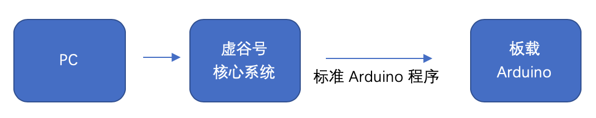
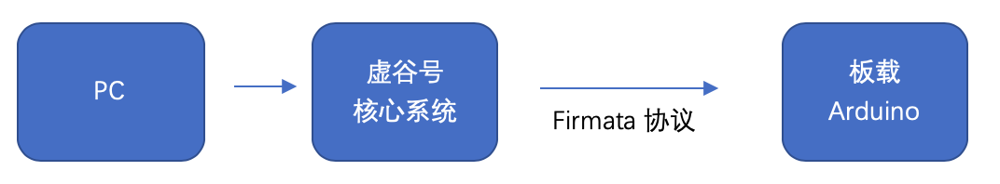
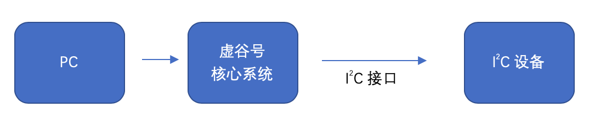

1. GPIO的实现方式¶
GPIO（英语：General-purpose input/output），通用型之输入输出的简称，可以理解为对芯片引脚电平的编程控制和状态读取。虚谷号提供了多种方式，实现GPIO功能。
1.1. 方式1：Arduino串口¶
虚谷号通过串口和板载的Arduino UNO连接，可以用任何一款Arduino的编程工具，以标准的Arduino代码进行编写，控制Arduino UNO的所有引脚，或者读取所有的引脚状态。
1.2. 方式2：借助xugu库¶
虚谷号给Arduino UNO烧写标准的Firmata协议，通过串口命令进行控制Arduino引脚。为降低初学者的开发门槛，虚谷号提供了和MicroPython语法完全兼容的xugu库，供Python编程教学或者作品开发时调用。
注：xugu库的语法与掌控板、micro:bit完全一致，大部分代码可以一键移植。
1.3. 方式3：I2C接口¶
虚谷号的主芯片引出I2C接口，可以通过这一接口来实现对外部设备的控制。
第三种方式中，虚谷号主芯片的I2C接口可以和方式1、方式2结合。相对来说，方式2的开发难度最低，能满足常用的大部分需求，只需要有Python编程基础即可。
